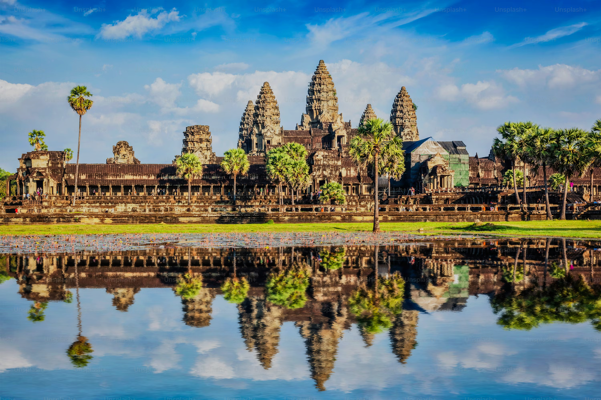
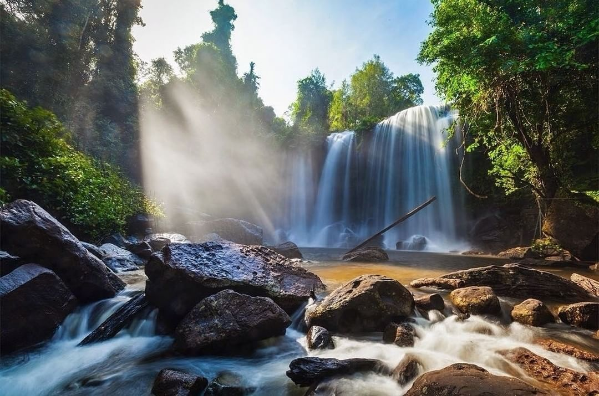
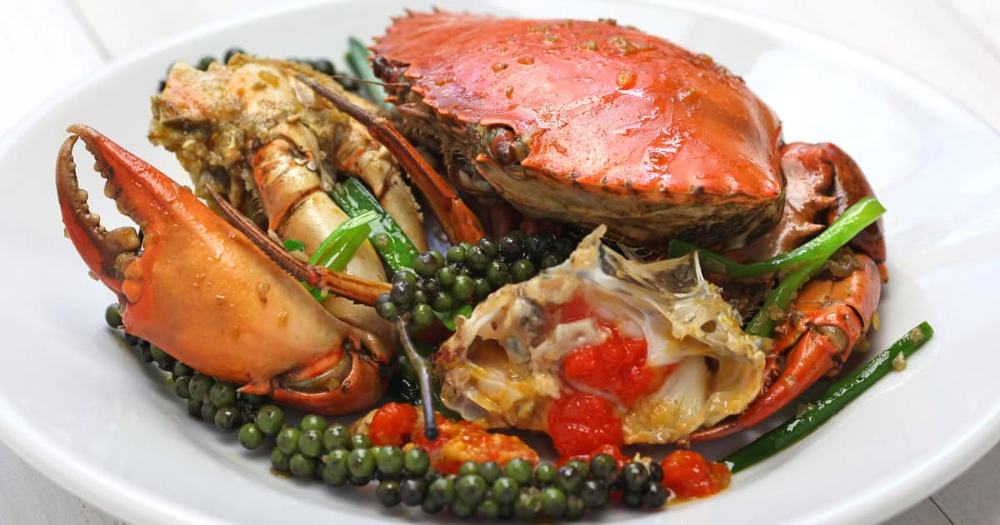

Top Picks
A curated selection of Cambodia's most iconic and unforgettable experiences.

Angkor Wat
Watch the sunrise slowly reveal the world's most iconic temple in golden light.

Koh Rong
Relax on soft white sands and swim in clear turquoise waters on a tropical island.

Phnom Kulen Waterfall
Cool off in refreshing jungle waterfalls surrounded by nature.

Kep Crab
Enjoy fresh crab cooked with Kampot pepper right by the sea.